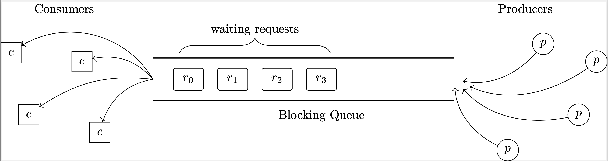

PDC@UNL
Module 3.0
In this module, you will observe a PDC pattern known as the consumer-producer pattern which lets you organize, coordinate, and handle asynchronous "requests."
Problem Statement
A common computing scenario is when there are a collection of independent asynchronous "entities" making requests for work that require computational resources. For example, you might have millions of users requesting information from a webserver or simply interacting with a website. To effectively respond to every user request, you need a strategy for coordinating and sharing computational resources.
Consider the real-world example of n lunch customers at a restaurant with m order kiosks. Each customer needs exclusive access to a kiosk to make an order. If multiple customers approach the same kiosk at the same time, we need a way to ensure they each get a turn to place their orders.
This scenario can be modeled as a producer-consumer pattern in which a collection of independent producers generate requests and a collection of consumers "handle" those requests. To organize and coordinate this process, producers submit requests to a blocking queue. A queue is simply a "line," very similar to people standing in line to order, in which requests wait until a consumer takes the next one for handling.
The queue coordinates this by blocking consumers or producers in the following manner. If the queue has a maximum capacity and it is full, producers are blocked from generating any more requests. If the queue is empty (no waiting requests) and a consumer tries to handle a request, it is blocked and told to wait. The queue will then notify the consumer when there is a new request to handle. This scenario is visualized below.

There are several situations that may present problems in a producer-consumer scenario:
- What happens when there are more producers than consumers or producers make many requests that producers cannot handle them all?
- What happens when there are more consumers than producers?
- What happens when the queue is full and cannot take any more requests?
You will witness these situations in the following exercises.
Visualization
To give you an idea of how a producer-consumer pattern works we've provided a simple visualization simulating a generic request system. Open the demonstration in a new tab. You'll be able to specify how many producers and consumers to create and you can then start the demo. Producers will (randomly every 2-6 seconds) produce new tasks and submit them to the queue. Consumers will continuously try to take a task from the queue and run them. Each task takes 2-6 seconds and once completed, the consumer will take the next task. You can stop the simulation and start a new one. Play around with the demonstration and try the following:
- Run the simulation with 3 producers and 3 consumers. After a few minutes how many tasks are waiting in the queue?
- Run the simulation with 5 producers and 1 consumer. After a few minutes how many tasks are waiting in the queue? If you continued running this simulation what would you expect to happen?
- Run the simulation with 1 producer and 5 consumers. After a few minutes how many tasks are waiting in the queue? What is one risk/disadvantage in this scenario?
- This simulation provided an unbounded queue: there was no limit to the size of the queue. Suppose we instead used a bounded queue that only allowed (say) 10 tasks in the queue at once. What do you think would happen and how should that situation be handled?
Code Demonstration & Exercises
We have written a producer-consumer simulation in two different languages. Choose either C or Java or do both!
C Version Java VersionDiscussion
Hopefully you made the following observations.
- When there are more producers than consumers or when the producers create more requests than the consumers can handle, the queue continuously grew in size and tasks were waiting longer and longer to execute.
- In all the simulations we provided an unbounded (or at least a very large) blocking queue so you likekly did not observe what happened when it got full. Generally, when the queue is full, producers are either blocked or their tasks are rejected. Think of the restaurant analogy: suppose that there are so many customers that the line to the kiosk is full. In an unbounded queue, customers would continue to line up around the block. In a bounded queue (suppose fire regulations only allowed so many customers in the building), customers may be asked to leave and come back at another time. In either case, we may have some irate customers (not being served or waiting for a very long time). Likewise, in our simulation, some tasks may end up timing out or not getting executed.
- When there were more consumers than producers, we observed just the opposite. Requests were handled almost immediately without waiting and the queue never had more than 1 or 2 tasks waiting in it. This may seem ideal, but a consumer is a non-trivial resource. If consumers are sitting idle most of the time they may be wasting resources depending on how they are waiting (busy or blocked).
- Finding a good balance between the number of producers/consumers is actually an entire field of study in mathematics called Queueing Theory.